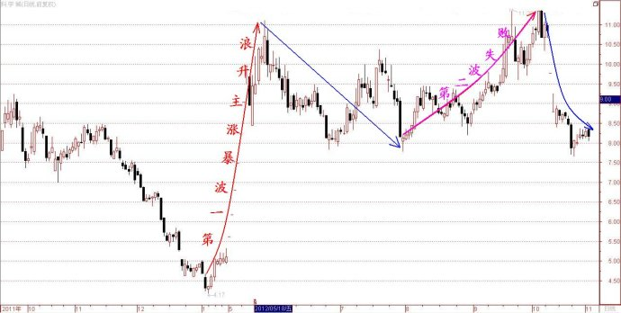

第275篇•教你炒股系列69:主升浪的形态（20）
谷为陵
3、前快后慢型两波主升浪形态
这类主升浪属于强势主升浪，因为在第一波暴涨型主升浪后，股价并未见顶，还能够在调整后继续上涨，走出第二波慢牛型主升浪，足见股价上涨的动力是很强的。
这类股票主要是重大题材股。股票因突发性重大利好题材往往会走出第一波暴涨型主升浪，但由于第一波涨势太猛，股价几乎一步到位；在第一波主升浪结束后，股价会进行调整，但因股票的利好题材还使股价剩余一点估值优势，股价还能惯性上涨，走出第二波主升浪，却已无能力出现暴涨了，而只能是走慢涨行情。
在重大题材股中，这类股票还是有一些的。其中的典型案例是高淳陶瓷（600562）。
2009年5月，高淳陶瓷因中国电子科技集团公司南京14所借壳重组，实现了“从日用陶瓷制造业到信息技术业”的“华丽转身”。在利好公告后，该股连拉11个涨停，在不到两个月时间内股价就从7.4元左右暴涨至31元，完成了第一波暴涨型主升浪。由于投资者对于南京14所非常看好，加上高淳陶瓷是个总股本只有8400万股的袖珍股，股价易于被炒作，使得该股仍具上涨动力。但由于该股的第一波主升浪涨幅实在太大了，涨幅达到了300%。而若从该股2008年11月的最低价3.3元计算，则该股自2008年11月至2009年7月，股价是从3.3元暴涨到了31元，涨幅竟达8.4倍！所以，该股在第一波暴涨型主升浪结束后，就只能走出慢牛行情，在其后的14个月里仅上涨了一倍。
下面是该股自2008年11月至2010年10月的日K线走势图（普通坐标）：
有人会说，高淳陶瓷的第二波主升浪看起来还是很陡的嘛，这不像慢牛行情呀。其实，这是一个视觉错觉，是因为采用普通坐标所致。普通坐标是按照相等价格来划分横坐标的等分线的，每两道等分线之间代表的是相同的价格，而非涨幅。如，股价从1元涨到10元，涨幅是9倍，而股价从10元涨到19元，涨幅是90%，两者涨幅不同，但这两个涨幅在普通坐标中包含的价格都是相同的9元，看不出区别。所以，为了更直观地比较高淳陶瓷两拨主升浪的不同涨幅，我认为用对数坐标会更好，因为对数坐标是按照相等涨幅划分横坐标的等分线的，每两道等分线之间的涨幅是相等的，股价包含的等分线越多，则涨幅越大。下图是高淳陶瓷自2008年至2010年10月的日K线对数坐标走势图：
可见，用对数坐标，高淳陶瓷两拨主升浪的差别就看得更清楚了。
有很多重大题材股在题材公告后，会走出第一波暴涨型主升浪，但却难以走出第二波主升浪。我说过，任何一轮主升浪的涨幅应该在100%以上，达不到这个涨幅的上涨波段，就不能算是一轮主升浪。若按照这个主升浪的标准去衡量那些重大题材股，我发现在振荡市场中，能够走出走第二波主升浪的只是少数，而走不出来的，或者说第二波主升浪失败的是占了多数。
比如，新希望。该股2010年9月公告重大资产注入后，曾经出现了连续7个“一字板”，强势特征明显，但其后该股虽然还能继续创出新高，但却无力发动第二波主升浪。下面是该股的走势图：
再如，科学城。该股在今年5月公告注入银矿资产后，也曾经出现了连续7个“一字板”，但其后该股虽然还能继续创出新高，但却无力发动第二波主升浪。下面是该股的走势图：

为什么有的重大题材股能够走出第二波主升浪，而有的却走不出来呢？这是一个非常重要的问题，因为它关系到抓强势股的操作模式能否成立。我在后面谈“前快后快型两波主升浪形态”时，就要重点谈这个问题。
（未完待续）